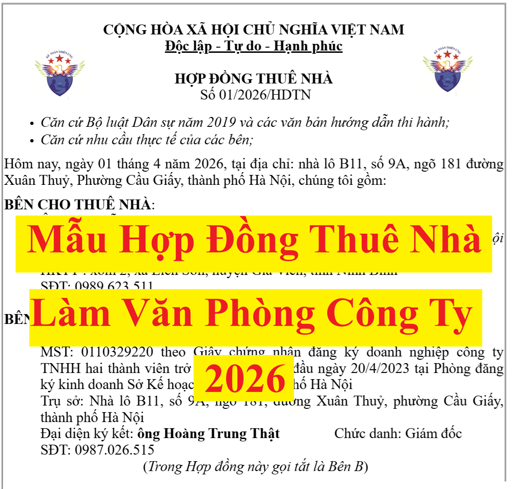

Mẫu hợp đồng thuê nhà làm văn phòng, làm trụ sở Công ty, kinh doanh; Tải mẫu hợp đồng cho thuê nhà của cá nhân, xử lý khoản chi phí thuê nhà của cá nhân vào chi phí hợp lý.
|
CỘNG HÒA XÃ HỘI CHỦ NGHĨA VIỆT NAM
Độc lập - Tự do - Hạnh phúc HỢP ĐỒNG THUÊ NHÀ
Số 01/2026/HDTN
Hôm nay, ngày 01 tháng 4 năm 2026, tại địa chỉ: nhà lô B11, số 9A, ngõ 181 đường Xuân Thuỷ, Phường Cầu Giấy, thành phố Hà Nội, chúng tôi gồm: BÊN CHO THUÊ NHÀ:
Ông: Nguyễn Văn Tài Sinh năm 1979
CCCD số 037069005621 do Cục Cảnh sát quản lý hành chính về trật tự xã hội cấp ngày 2/1/2023 HKTT : xóm 2, xã Liên Sơn, huyện Gia Viễn, tỉnh Ninh Bình SĐT: 0989.623.511
(Trong Hợp đồng này gọi tắt là Bên A)
BÊN THUÊ NHÀ:
Công Ty Tư Vấn Minh Phúc
MST: 0119365824 theo Giấy chứng nhận đăng ký doanh nghiệp công ty TNHH hai thành viên trở lên đăng ký lần đầu ngày 20/4/2023 tại Phòng đăng ký kinh doanh Sở Kế hoạch Đầu tư thành phố Hà Nội Trụ sở: Nhà lô B11, số 9A, ngõ 181, đường Xuân Thuỷ, phường Cầu Giấy, thành phố Hà Nội Đại diện ký kết: ông Trần Quốc Hưng Chức danh: Giám đốc SĐT: 0908.246.317
(Trong Hợp đồng này gọi tắt là Bên B)
Hai Bên tự nguyện thỏa thuận lập và ký Hợp đồng này để thực hiện việc cho thuê và thuê nhà với các điều khoản cụ thể như sau:
ĐIỀU 1: ĐỐI TƯỢNG VÀ MỤC ĐÍCH CỦA HỢP ĐỒNG
- Đối tượng của hợp đồng: toàn bộ căn nhà tại địa chỉ lô B11, số 9A, ngõ 181, đường Xuân Thuỷ, Phường Cầu Giấy, thành phố Hà Nội thuộc quyền sở hữu, sử dụng của Bên A theo Giấy chứng nhận quyền sử dụng đất, quyền sở hữu nhà ở và tài sản khác gắn liền với đất số BE 266414, số vào sổ cấp GCN: CH 605/QĐ-UBND/2011/635 do UBND thành phố Hà Nội cấp ngày 31/3/2021.- Mục đích thuê: Làm văn phòng công ty Bằng Hợp đồng này, hai bên đồng ý thuê và cho thuê toàn bộ căn nhà nêu trên.
ĐIỀU 2: THỜI HẠN THUÊ VÀCHO THUÊ, THỜI ĐIỂM GIAO NHẬN NHÀ THUÊ
2.1. Thời hạn thuê và cho thuê là 02 (hai) năm
Bắt đầu từ ngày 01/04/2026 đến hết ngày 31/03/2028
2.2. Thời điểm giao nhà: ngày 01/04/2026
ĐIỀU 3: TIỀN ĐẶT CỌC (BẢO ĐẢM)
3.1. Tiền đặt cọc: Để đảm bảo việc giao kết và thực hiện hợp đồng, Bên B phải đóng cho bên A một khoản tiền đặt cọc tương đương với 2 tháng tiền nhà là 40.000.000 đồng (Bằng chữ: Bốn mươi bốn triệu đồng chẵn.)
=> Thời điểm thanh toán tiền đặt cọc: ngày 01/04/2026
3.2. Bên A sẽ trả lại tiền đặt cọc này cho Bên B trong vòng 03 ngày kể từ ngày chấm dứt hợp đồng.3.3. Nếu trong thời hạn thuê bên A bán nhà hoặc chấm dứt hợp đồng trước thời hạn thì bên A phải:
+ Bồi thường cho bên B số tiền tương đương với số tiền đặt cọc là 40.000.000đ
+ Hoàn trả lại số tiền mà bên B đã đặt cọc + Hoàn trả lại số tiền thuê mà bên B đã trả trước nhưng chưa sử dụng.
ĐIỀU 4: GIÁ THUÊ VÀ PHƯƠNG THỨC THANH TOÁN
4.1.Giá thuê nhà:
Giá thuê: 20.000.000 đồng/tháng (Hai mươi triệu đồng trên một tháng).
Giá thuê nhà này chưa bao gồm các khoản chi phí phát sinh liên quan đến việc sử dụng nhà thuê như: tiền điện, tiền nước sinh hoạt, tiền gas, tiền cước điện thoại, fax, cước internet, tiền vệ sinh môi trường, tiền an ninh khu vực... Giá thuê trên chưa bao gồm tiền thuế cho thuê tài sản theo quy định của pháp luật. Bên B chịu trách nhiệm kê khai, nộp thuế cho thuê tài sản theo quy định của pháp luật thay cho bên A 4.2. Phương thức thanh toán tiền đặt cọc và tiền thuê nhà:
Bên A thực hiện thanh toán tiền thuê nhà bằng cách chuyển tiền vào:
+ Số tài khoản: 0045826713 + Mở tại: Ngân hàng Thương Mại Cổ Phần Á Châu (ACB)
+ Chủ tài khoản: Nguyễn Văn Tài
4.3. Kỳ thanh toán tiền thuê nhà:
Bên B có trách nhiệm thanh toán cho bên A định kỳ 06 tháng/lần tương đương với số tiền là: 120.000.000 đồng/lần
4.4. Thời hạn thanh toán tiền thuê nhà:
+ Đợt thanh toán đầu tiên: thanh toán vào ngày 01/04/2026
+ Các đợt tiếp theo: thanh toán trong vòng 5 ngày đầu tiên của mỗi kỳ thanh toán
ĐIỀU 5: SỬA CHỮA VÀ BẢO TRÌ
5.1. Việc duy trì, sửa chữa, bảo dưỡng nhà cho thuê do Bên B tự thực hiện và chịu chi phí đồng thời tuân thủ mọi qua định của pháp luật không làm thay đổi, biến dạng hoặc làm ảnh hưởng đến chất lượng và sự an toàn đối với nhà cho thuê.
5.2. Trong quá trình sử dụng Bên B có sửa chữa, bảo dưỡng để phù hợp với mục đích thuê và phải thông báo để nhận được sự đồng ý của Bên A trước khi thực hiện.
ĐIỀU 6: QUYỀN VÀ NGHĨA VỤ CỦA CÁC BÊN
6.1.Quyền và nghĩa vụ của Bên A:
a) Quyền của Bên A: - Bàn giao cho bên B diện tích nhà theo thỏa thuận của 2 bên. - Yêu cầu Bên B thanh toán tiền thuê nhà đầy đủ và đúng thời hạn mà hai Bên đã thỏa thuận theo quy định trong Hợp đồng này. - Được quyền kiểm tra việc sử dụng của Bên B đối với nhà ở được thuê tại nhà ở nêu trên sau khi thông báo cho Bên B. - Nhận lại nhà cho thuê trong các trường hợp chấm dứt Hợp đồng theo quy định của Hợp đồng này hoặc trong trường hợp hai Bên có thỏa thuận khác. - Bên A có toàn quyền chuyển toàn bộ tài sản của Bên B ra khỏi ngôi nhà thuê mà không cần sự đồng ý của bên B và bên A sẽ không chịu trách nhiệm trước pháp luật khi bên B không tiếp nhận hoặc bảo quản tài sản của mình khi: + Hết thời hạn thuê mà hai Bên không thỏa thuận gia hạn hợp đồng thuê; + Hoặc do một trong hai bên đơn phương chấm dứt hợp đồng này mà bên B không tự nguyện chuyển tài sản khỏi địa điểm thuê. - Đơn phương chấm dứt hợp đồng khi bên B vi phạm quy định của hợp đồng này nhưng phải báo trước cho Bên B 2 ngày làm việc trong các trường hợp như: thanh toán tiền thuê không đúng hạn quá 5 ngày trở lên; vi phạm các quy định về cải tạo, lắp đặt, sửa chữa, thay đổi kết cấu của ngôi nhà khi không được sự đồng ý của Bên A; sử dụng nhà không đúng mục đích thuê; cho Bên thứ 3 thuê lại nhà mà không có sự đồng ý của Bên A; … và Bên A không phải bồi thường hay bị phạt trong các trường hợp này. - Yêu cầu Bên B bồi thường thiệt hại khi có thiệt hại do lỗi của Bên B. b) Nghĩa vụ của Bên A: - Bên A cam đoan khi lập và ký bản Hợp đồng này, nhà ở nói trên không có tranh chấp về quyền sở hữu nhà và quyền sử dụng đất và không bị ràng buộc bởi bất kỳ giao dịch nào. - Bàn giao nhà ở cho thuê theo quy định tại Hợp đồng này. - Tạo mọi điều kiện để Bên B được sử dụng thuận tiện nhà ở thuê, không làm ảnh hưởng đến hoạt động bình thường của Bên B. - Trường hợp muốn chấm dứt hợp đồng trước thời hạn thì sẽ phải chịu phạt số tiền tương ứng với số tiền đặt cọc và phải báo trước cho Bên B biết trước ít nhất là 02 (hai) tháng. - Phối hợp và giúp đỡ bên thuê trong những vấn đề liên quan đến bên thứ 3. 6.2.Quyền và nghĩa vụ của Bên B: a) Quyền của Bên B: - Nhận bàn giao nhà ở cùng các trang thiết bị chủ yếu về điện, nước gắn liền với nhà ở nêu trên của Bên A theo đúng thời hạn giao và nhận nhà quy định tại Hợp đồng này. - Được sử dụng các trang thiết bị có sẵn trong nhà ở nêu trên, được lắp đặt thêm trang thiết bị để phục vụ mục đích sử dụng của mình nhưng phải được sự đồng ý của bên A. Khi hết thời hạn Hợp đồng, Bên B được quyền tháo dỡ và chuyển đi toàn bộ những trang thiết bị mà Bên B đã lắp đặt thêm tại nhà ở nêu trên. - Được yêu cầu Bên A bồi thường số tiền đã bỏ ra để cải tạo ngôi nhà trong trường hợp bên A đơn phương chấm dứt hợp đồng thuê nhà mà không phải do lỗi của Bên B b) Nghĩa vụ của Bên B: - Trả tiền thuê nhà đầy đủ và đúng kỳ hạn cho Bên A và chỉ được sử dụng nhà ở được thuê theo đúng mục đích đã nêu tại Điều 1 của Hợp đồng này. - Bên thuê nhà chịu trách nhiệm đăng ký thuế, kê khai, nộp thuế (nếu có) cho thuê tài sản thay cho bên A theo quy định của pháp luật
- Chuyển tài sản ra khỏi ngôi nhà sau khi Hợp đồng thuê nhà hết hạn.
- Chịu trách nhiệm trước pháp luật về mọi hoạt động của mình tại nhà ở được thuê. - Không được tự ý thay đổi cấu trúc của nhà ở được thuê. Trong trường hợp sửa chữa, cải tạo lại nhà cho phù hợp với mục đích thuê thì phải được sự đồng ý của Bên A bằng văn bản cụ thể và Bên B phải chịu toàn bộ chi phí đó. Trong quá trình sửa chữa, cải tạo nếu để xảy ra sự cố gây thiệt hại đến người hoặc tài sản, Bên B phải hoàn toàn chịu trách nhiệm trước pháp luật và phải bồi thường toàn bộ thiệt hại cho Bên A hoặc cho Bên thứ ba. - Giữ gìn và bảo quản tốt các trang thiết bị của Bên A có sẵn trong nhà ở thuê, trong quá trình sử dụng nếu Bên B làm hư hỏng thì tùy theo mức độ thiệt hại Bên B phải sửa chữa hoặc thay mới cho Bên A bằng chi phí của Bên B. - Có trách nhiệm nộp thuế cho thuê nhà, phải thanh toán tiền điện, nước, vệ sinh, điện thoại, fax và các khoản phát sinh khác trong quá trình thuê nhà của mình cho cơ quan chức năng theo thực tế sử dụng. - Không được quyền đại diện/thay mặt Bên A nộp các khoản phí, lệ phí, thuế, các nghĩa vụ tài chính đối với Nhà nước...liên quan đến quyền của chủ sở hữu/chủ sử dụng nhà đất nêu tại hợp đồng này. - Giữ gìn trật tự an ninh, phòng chống cháy nổ, vệ sinh môi trường..., không được làm ảnh hưởng đến các hộ gia đình liền kề. - Khi hết hạn Hợp đồng phải bàn giao nhà ở cho Bên A cùng các trang thiết bị như khi bắt đầu thuê. Bên B phải thanh toán xong toàn bộ các khoản chi phí điện, nước, điện thoại, ... với các cơ quan chức năng trước khi hai Bên ký bản thanh lý Hợp đồng thuê nhà và bàn giao lại nhà ở thuê. Nếu không có nhu cầu thuê nhà tiếp, bên B phải báo cho bên A trước 15 ngày kể từ ngày Hợp đồng thuê hết hạn để hai bên cùng quyết toán tiền thuê nhà và các khoản khác liên quan. - Trường hợp muốn chấm dứt hợp đồng trước thời hạn thì sẽ phải chịu phạt mất số tiền đặt cọc và phải báo trước cho Bên A biết trước ít nhất là 02 (hai) tháng. - Sau khi chấm dứt Hợp đồng, Bên B được quyền tháo dỡ các trang thiết bị mà Bên B đã lắp đặt, trừ những hạng mục gắn liền với kết cấu nhà.
ĐIỀU 7: CAM KẾT CỦA HAI BÊN
7.1. Việc giao kết Hợp đồng này là hoàn toàn tự nguyện, không Bên nào bị áp đặt, bị cấm đoán, bị cưỡng ép, bị đe dọa, bị ngăn cản hoặc bị lừa dối và không nhằm trốn tránh bất kỳ nghĩa vụ dân sự nào.
7.2. Những thông tin ghi trong Hợp đồng này là đúng sự thật. Các văn bản, giấy tờ xuất trình làm căn cứ để lập và ký Hợp đồng này là do cơ quan nhà nước có thẩm quyền cấp hoặc xác nhận và không có sự giả mạo, tẩy xóa, sửa chữa. Việc cho thuê và thuê toàn bộ diện tích của nhà ở nêu trên là có thật. 7.3. Thực hiện đúng và đầy đủ các điều khoản của Hợp đồng này với tinh thần và thái độ nghiêm túc, thiện chí, hợp tác, đồng thuận và đúng pháp luật.
ĐIỀU 8: ĐIỀU KHOẢN CUỐI CÙNG
8.1. Việc sửa đổi, bổ sung, hủy bỏ hợp đồng chỉ được thực hiện khi hai bên đồng ý và lập thành văn bản.
8.2. Trong quá trình thực hiện Hợp đồng này, nếu phát sinh tranh chấp, hai Bên phải cùng nhau thương lượng, hòa giải để giải quyết tranh chấp trên nguyên tắc tôn trọng quyền, lợi ích hợp pháp của nhau và tuân thủ pháp luật. Trong trường hợp không giải quyết được thì một trong hai Bên có quyền khởi kiện để yêu cầu Tòa án có thẩm quyền giải quyết theo quy định của pháp luật. 8.3. Nếu hai Bên vẫn có nhu cầu tiếp tục thuê và cho thuê thì hai Bên sẽ ký Hợp đồng mới hoặc ký Phụ lục gia hạn Hợp đồng này. 8.4. Hợp đồng có hiệu lực kể từ ngày ký. Hai bên tự đọc lại toàn bộ nội dung của bản hợp đồng công nhận đã hiểu rõ và chấp thuận toàn bộ các điều khoản của Hợp đồng và không có điều gì vướng mắc cùng ký tên dưới đây để làm bằng chứng. 8.5 Hợp đồng này được lập thành 02 bản (mỗi bản gồm 05 tờ 05 trang) có giá trị pháp lý như nhau mỗi bên giữ 01 bản chính
|
Công ty đào tạo Kế Toán Diệu Tâm mời các bạn tham khảo thêm bài viết:
--------------------------------------------
Các bạn muốn tải (download) Mẫu hợp đồng thuê nhà làm văn phòng Công ty mới nhất năm 2026 này về để tham khảo và sử dụng thì có thể gửi mail về địa chỉ mail: ketoandieutam@gmail.com => Kế Toán Diệu Tâm sẽ gửi lại Mẫu hợp đồng thuê nhà làm văn phòng Công ty mới nhất năm 2026 cho các bạn
--------------------------------------------
